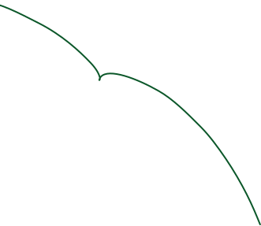
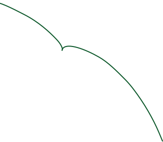

Зимний день Московского спорта


Зимний день Московского спорта


Москва не замирает зимой — она живет спортом круглый год.
Зимний день Московского спорта объединяет каток, лыжи, тюбинг, спортивные аттракционы и много музыки.
Приходите кататься, веселиться и выигрывать призы.

Карта фестиваля


Сцена
- 12:00
- 13:00Выступление …Какая-то инфа
- 13:30Спортивное шоу | Керлинг-грув
- 14:30Спортивное шоу | Шорт-трек
- 15:00Выступление …
- 17:00Спортивное шоу | Бобслей, скелетон
- 17:30Дискотека с кавер-группой
- 18:00Выступление хедлайнера
Секретный гость - 18:30Диджей

Зимние аттракционы 11:00–19:00
Керлинг, снежковый дартс, командные игры, мастер-классы и творческие зоны — выбирайте любую активность, отмечайте участие в специальной карточке и получайте подарки.
Фан-встречи
Уникальная возможность встретиться и пообщаться со своими кумирами из мира спорта. Не пропустите!


Горка для тюбинга 11:00–21:00
Лыжно-биатлонная трасса 08:00–15:30
На трассе проходят индивидуальные и командные гонки: детские и подростковые соревнования, семейные и корпоративные эстафеты.
ПодробнееКаток 10:00–17:30
В течение дня здесь проходят тематические активности ко Дню студента: диджей-сеты, мастер-класс с фигуристом, спортивные соревнования и выступления артистов.
Подробнее
 

Вопросы и ответы
На горке вы можете бесплатно взять тюбинги и спортивное оборудование. Пользоваться своим инвентарем и тюбингами запрещено.
На катке вы можете пользоваться своими коньками или взять в аренду в пункте проката, расположенном рядом с площадкой. Аренда коньков не включена в активности.